Advanced Search
Et le module complémentaire Advanced Search adapter for Solr.
Ces modules permettent de mettre en place des pages de résultats de recherche pour les ressources.
Créer une page de résultats
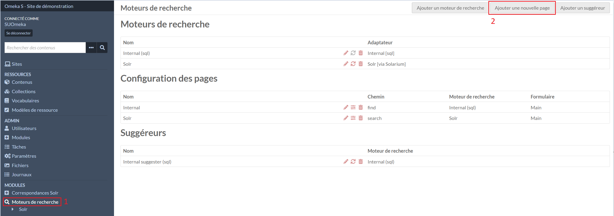
Dans l'onglet Moteurs de recherche (1), le deuxième bouton Ajouter une nouvelle page en haut à droite permet de créer une nouvelle page de résultats.
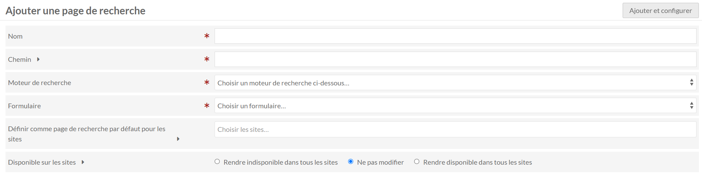
Dans le formulaire, il faut indiquer :
- un nom pour les affichages dans l'administration
- un chemin qui sera utiliser dans les urls
- Solr (Solr [via Solarium]) en moteur de recherche
- Principal en formulaire
Attention
La page de recherche doit être sélectionner dans les Pages de recherche disponibles dans les paramêtres des sites pour les utiliser et éviter des erreurs dans la configuration des sites
Modifier une page de résultats
Dans l'onglet Moteurs de recherche (1), il faut cliquer sur le stylo de la page à modifier (2).
Le formulaire est le même que celui de la création d'une page de résultats.
Configurer une page de résultats
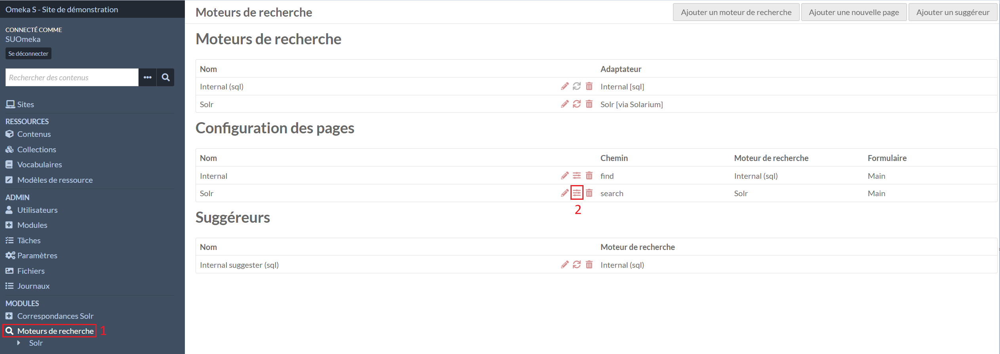
Dans l'onglet Moteurs de recherche (1), il faut cliquer sur le deuxième icône de la page à configurer (2).
Affichage des résultats
Dans la partie Affichage des résultats, il est possible de choisir où afficher certains éléments de la page de résultat.
Tri
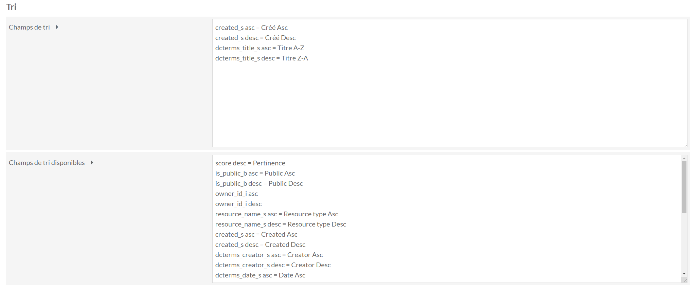
Dans la partie Tri, il y a deux listes de valeurs, la première contient les tris qui seront actifs dans la page de résultats.
Le libellé après le = sera utilisé pour les affichages.
Dans la deuxième liste se trouve les tris disponibles pour les copier dans la liste au-dessus.
Note
Si Advanced Search adapter for Solr est utlisé, une correspondance string (_s) de l'élément sur lequel trier est nécessaire.
Facettes
Les facettes sont les filtres de recherche disponibles à côté des résultats de recherche.
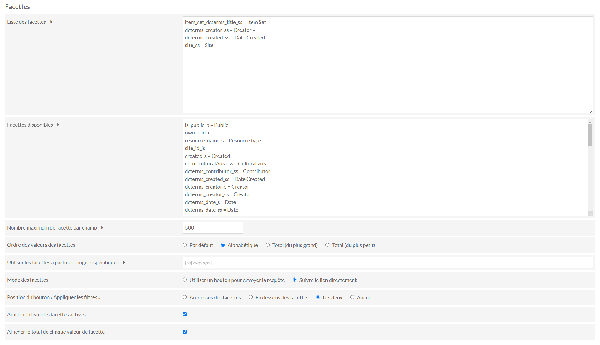
Dans la partie Facettes, il y a deux listes de valeurs, la première contient les facettes qui seront affichées dans la page de résultats.
Le libellé entre les = sera utilisé pour les affichages.
Note
Si Advanced Search adapter for Solr est utlisé, une correspondance strings (_ss) de l'élément est nécessaire.
Dans la deuxième liste se trouve les facettes disponibles pour les copier dans la liste au-dessus.
L'Ordre des valeurs des facettes s'appliquent à toutes les facettes.
Le Mode des facettes permet de choisir comment l'utilisateur utilisera les facettes :
Suivre le lien directement : en cliquant sur un filtre, la page se rechargera en actualisant les résultats et les filtres sur lesquels il sera possible d'affiner la recherche.
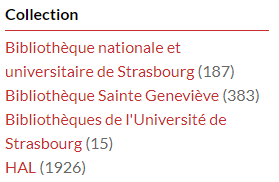
Utiliser un bouton pour envoyer la requête : des cases à cocher seront disponibles en plus d'un bouton pour appliquer les filtres.
- Sélectionner deux valeurs d'un même ensemble de facettes s'appliqueront avec un OU.
- Sélectionner deux valeurs de deux ensembles de facettes distinct les appliqueront avec un ET.
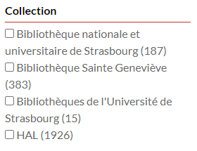
Correspondances Solr (Advanced Search adapter for Solr)
Les correspondances indiquent à Solr comment indexer chaque propriétés et/ou les informations des ressources.
Liste des correspondances
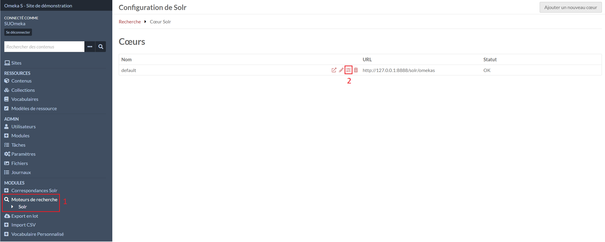
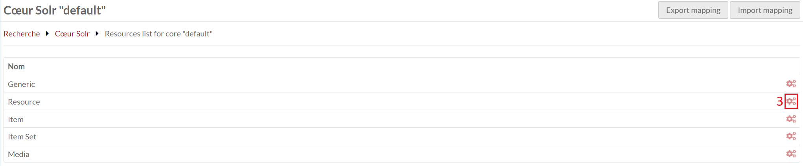
Il faut accéder à la configuration de Solr dans le menu Moteurs de recherche (1), configurer le coeur (2), accéder à la gestion des correspondances des ressources (3).
Il est possible de créer plusieurs correspondances pour une même proprité ou information. Certains types de correspondances sont utilisés pour les tris ou les facettes des pages de résultats.
Création d'une correspondance
Note
Si Adm'Inist est installé voir : Adm'Inist - Création des correspondances
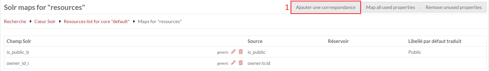
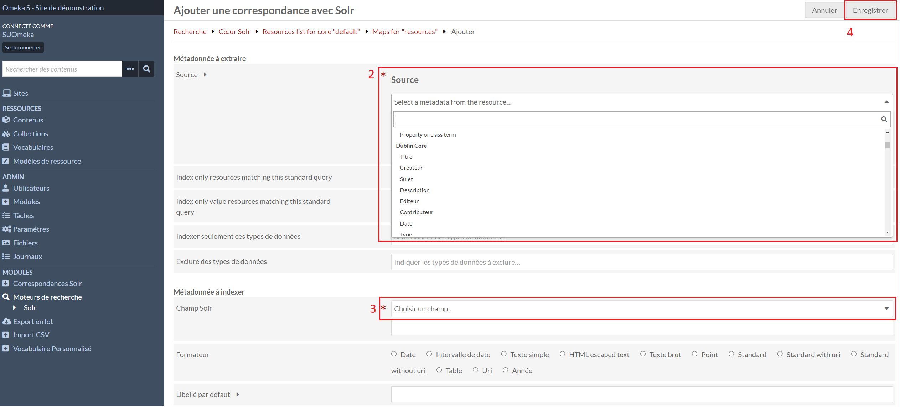
Il faut accéder à la liste des correspondances, il faut cliquer sur le 1er bouton Ajouter une correspondance en haut à droite (4).
Dans le formulaire, il faut sélectionner la propriété ou l'information (2) que Solr doit indexer et indiquer de quelle manière l'indexer (3) :
- *_ss (strings) pour les facettes, index, rebonds
- *_s (string) pour les tris
- *_txt (text_general) pour les textes
Suppression d'une correspondance
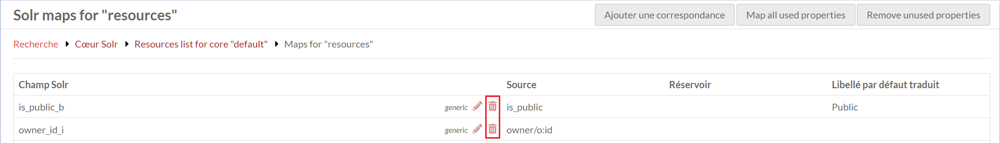
Il faut accéder à la liste des correspondances, la suppression d'une correspondance se fait en cliquant sur la poubelle de celle-ci et en validant la fenêtre qui s'ouvre à droite.
Indexer Solr (Advanced Search adapter for Solr)
Solr a besoin d'indexer les propriétés et/ou les informations configurer dans les correspondances pour permettre la recherche.
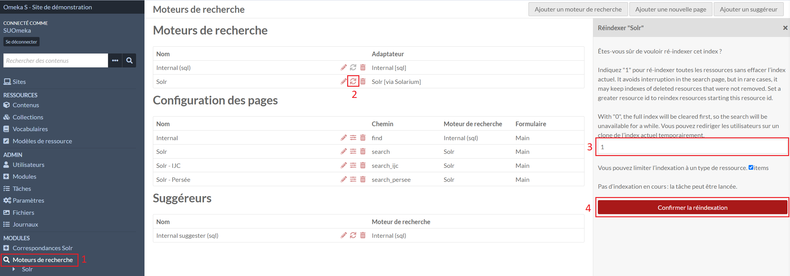
Dans l'onglet Moteurs de recherche (1), le deuxième bouton avec deux flèches (2) permet d'ouvrir la fenêtre à droite pour lancer l'indexation.
La zone saisie (3) permet d'indiquer à Solr si une actualisation des index (en laissant la valeur 1) ou si les index doivent être réinitialisés avant l'indexation en indiquant la valeur 0.
L'indexation se lance en cliquant sur Confirmer la réindexation (4). Celle-ci se lance en fond et nécessite un temps pour la création/actualisation des index.